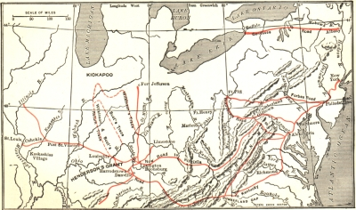
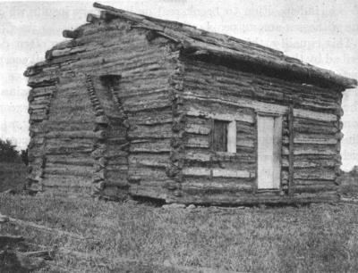
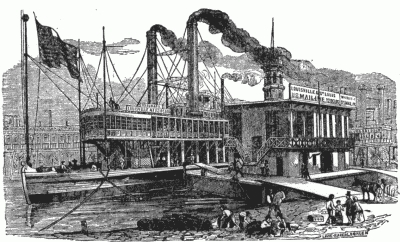
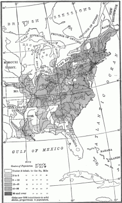

The nationalism of Hamilton was undemocratic. The democracy of Jefferson was, in the beginning, provincial. The historic mission of uniting nationalism and democracy was in the course of time given to new leaders from a region beyond the mountains, peopled by men and women from all sections and free from those state traditions which ran back to the early days of colonization. The voice of the democratic nationalism nourished in the West was heard when Clay of Kentucky advocated his American system of protection for industries; when Jackson of Tennessee condemned nullification in a ringing proclamation that has taken its place among the great American state papers; and when Lincoln of Illinois, in a fateful hour, called upon a bewildered people to meet the supreme test whether this was a nation destined to survive or to perish. And it will be remembered that Lincoln's party chose for its banner that earlier device—Republican—which Jefferson had made a sign of power. The "rail splitter" from Illinois united the nationalism of Hamilton with the democracy of Jefferson, and his appeal was clothed in the simple language of the people, not in the sonorous rhetoric which Webster learned in the schools.
Preparation for Western Settlement
The West and the American Revolution. —The excessive attention devoted by historians to the military operations along the coast has obscured the rôle played by the frontier in the American Revolution. The action of Great Britain in closing western land to easy settlement in 1763 was more than an incident in precipitating the war for independence. Americans on the frontier did not forget it; when Indians were employed by England to defend that land, zeal for the patriot cause set the interior aflame. It was the members of the western vanguard, like Daniel Boone, John Sevier, and George Rogers Clark, who first understood the value of the far-away country under the guns of the English forts, where the Red Men still wielded the tomahawk and the scalping knife. It was they who gave the East no rest until their vision was seen by the leaders on the seaboard who directed the course of national policy. It was one of their number, a seasoned Indian fighter, George Rogers Clark, who with aid from Virginia seized Kaskaskia and Vincennes and secured the whole Northwest to the union while the fate of Washington's army was still
Western Problems at the End of the Revolution. —The treaty of peace, signed with Great Britain in 1783, brought the definite cession of the coveted territory west to the Mississippi River, but it left unsolved many problems. In the first place, tribes of resentful Indians in the Ohio region, even though British support was withdrawn at last, had to be reckoned with; and it was not until after the establishment of the federal Constitution that a well-equipped army could be provided to guarantee peace on the border.
In the second place, British garrisons still occupied forts on Lake Erie pending the execution of the terms of the treaty of 1783—terms which were not fulfilled until after the ratification of the Jay treaty twelve years later. In the third place, Virginia, Connecticut, and Massachusetts had conflicting claims to the land in the Northwest based on old English charters and Indian treaties. It was only after a bitter contest that the states reached an agreement to transfer their rights to the government of the United States, Virginia executing her deed of cession on March 1, 1784. In the fourth place, titles to lands bought by individuals remained uncertain in the absence of official maps and records. To meet this last situation, Congress instituted a systematic survey of the Ohio country, laying it out into townships, sections of 640 acres each, and quarter sections. In every township one section of land was set aside for the support of public schools.
The Northwest Ordinance. —The final problem which had to be solved before settlement on a large scale could be begun was that of governing the territory. Pioneers who looked with hungry eyes on the fertile valley of the Ohio could hardly restrain their impatience. Soldiers of the Revolution, who had been paid for their services in land warrants entitling them to make entries in the West, called for action.
Congress answered by passing in 1787 the famous Northwest Ordinance providing for temporary territorial government to be followed by the creation of a popular assembly as soon as there were five thousand free males in any district. Eventual admission to the union on an equal footing with the original states was promised to the new territories. Religious freedom was guaranteed. The safeguards of trial by jury, regular judicial procedure, and
habeas corpus were established, in order that the methods of civilized life might take the place of the rough-and-ready justice of lynch law. During the course of the debate on the Ordinance, Congress added the sixth article forbidding slavery and involuntary servitude.
This Charter of the Northwest, so well planned by the Congress under the Articles of Confederation, was continued in force by the first Congress under the Constitution in 1789. The following year its essential provisions, except the ban on slavery, were applied to the territory south of the Ohio, ceded by North Carolina to the national government, and in 1798 to the Mississippi territory, once held by Georgia. Thus it was settled for all time that "the new colonies were not to be exploited for the benefit of the parent states (any more than for the benefit of England) but were to be autonomous and coördinate commonwealths." This outcome, bitterly opposed by some Eastern leaders who feared the triumph of Western states over the seaboard, completed the legal steps necessary by way of preparation for the flood of settlers.
The Land Companies, Speculators, and Western Land Tenure. —As in the original settlement of America, so in the opening of the West, great companies and single proprietors of large grants early figured. In 1787 the Ohio Land Company, a New England concern, acquired a million and a half acres on the Ohio and began operations by planting the town of Marietta. A professional land speculator, J.C.
Symmes, secured a million acres lower down where the city of Cincinnati was founded. Other individuals bought up soldiers' claims and so acquired enormous holdings for speculative purposes. Indeed, there was such a rush to make fortunes quickly through the rise in land values that Washington was moved to cry out against the "rage for speculating in and forestalling of land on the North West of the Ohio," protesting that
"scarce a valuable spot within any tolerable distance of it is left without a claimant." He therefore urged
Congress to fix a reasonable price for the land, not "too exorbitant and burdensome for real occupiers, but high enough to discourage monopolizers."
Congress, however, was not prepared to use the public domain for the sole purpose of developing a body of small freeholders in the West. It still looked upon the sale of public lands as an important source of revenue with which to pay off the public debt; consequently it thought more of instant income than of ultimate results. It placed no limit on the amount which could be bought when it fixed the price at $2 an acre in 1796, and it encouraged the professional land operator by making the first installment only twenty cents an acre in addition to the small registration and survey fee. On such terms a speculator with a few thousand dollars could get possession of an enormous plot of land. If he was fortunate in disposing of it, he could meet the installments, which were spread over a period of four years, and make a handsome profit for himself. Even when the credit or installment feature was abolished in 1821 and the price of the land lowered to a cash price of $1.75 an acre, the opportunity for large speculative purchases continued to attract capital to land ventures.
The Development of the Small Freehold. —The cheapness of land and the scarcity of labor, nevertheless, made impossible the triumph of the huge estate with its semi-servile tenantry. For about $45 a man could get a farm of 160 acres on the installment plan; another payment of $80 was due in forty days; but a four-year term was allowed for the discharge of the balance. With a capital of from two to three hundred dollars a family could embark on a land venture. If it had good crops, it could meet the deferred payments. It was, however, a hard battle at best. Many a man forfeited his land through failure to pay the final installment; yet in the end, in spite of all the handicaps, the small freehold of a few hundred acres at most became the typical unit of Western agriculture, except in the planting states of the Gulf. Even the lands of the great companies were generally broken up and sold in small lots.
The tendency toward moderate holdings, so favored by Western conditions, was also promoted by a clause in the Northwest Ordinance declaring that the land of any person dying intestate—that is, without any will disposing of it—should be divided equally among his descendants. Hildreth says of this provision: "It established the important republican principle, not then introduced into all the states, of the equal distribution of landed as well as personal property." All these forces combined made the wide dispersion of wealth, in the early days of the nineteenth century, an American characteristic, in marked contrast with the European system of family prestige and vast estates based on the law of primogeniture.
The Western Migration and New States
The People. —With government established, federal arms victorious over the Indians, and the lands surveyed for sale, the way was prepared for the immigrants. They came with a rush. Young New Englanders, weary of tilling the stony soil of their native states, poured through New York and Pennsylvania, some settling on the northern bank of the Ohio but most of them in the Lake region. Sons and daughters of German farmers in Pennsylvania and many a redemptioner who had discharged his bond of servitude pressed out into Ohio, Kentucky, Tennessee, or beyond. From the exhausted fields and the clay hills of the Southern states came pioneers of English and Scotch-Irish descent, the latter in great numbers. Indeed one historian of high authority has ventured to say that "the rapid expansion of the United States from a coast strip to a continental area is largely a Scotch-Irish achievement." While native Americans of mixed stocks led the way into the West, it was not long before immigrants direct from Europe, under the stimulus of company enterprise, began to filter into the new settlements in increasing numbers.
The types of people were as various as the nations they represented. Timothy Flint, who published his entertaining Recollections in 1826, found the West a strange mixture of all sorts and conditions of people.
Some of them, he relates, had been hunters in the upper world of the Mississippi, above the falls of St.
Anthony. Some had been still farther north, in Canada. Still others had wandered from the South—the Gulf of Mexico, the Red River, and the Spanish country. French boatmen and trappers, Spanish traders from the Southwest, Virginia planters with their droves of slaves mingled with English, German, and Scotch-Irish farmers. Hunters, forest rangers, restless bordermen, and squatters, like the foaming combers of an advancing tide, went first. Then followed the farmers, masters of the ax and plow, with their wives who shared every burden and hardship and introduced some of the features of civilized life. The hunters and rangers passed on to new scenes; the home makers built for all time.
The Number of Immigrants. —There were no official stations on the frontier to record the number of immigrants who entered the West during the decades following the American Revolution. But travelers of the time record that every road was "crowded" with pioneers and their families, their wagons and cattle; and that they were seldom out of the sound of the snapping whip of the teamster urging forward his horses or the crack of the hunter's rifle as he brought down his evening meal. "During the latter half of 1787,"
says Coman, "more than nine hundred boats floated down the Ohio carrying eighteen thousand men, women, and children, and twelve thousand horses, sheep, and cattle, and six hundred and fifty wagons."
Other lines of travel were also crowded and with the passing years the flooding tide of home seekers rose higher and higher.
The Western Routes. —Four main routes led into the country beyond the Appalachians. The Genesee road, beginning at Albany, ran almost due west to the present site of Buffalo on Lake Erie, through a level country. In the dry season, wagons laden with goods could easily pass along it into northern Ohio. A second route, through Pittsburgh, was fed by three eastern branches, one starting at Philadelphia, one at Baltimore, and another at Alexandria. A third main route wound through the mountains from Alexandria to Boonesboro in Kentucky and then westward across the Ohio to St. Louis. A fourth, the most famous of them all, passed through the Cumberland Gap and by branches extended into the Cumberland valley and the Kentucky country.
Of these four lines of travel, the Pittsburgh route offered the most advantages. Pioneers, no matter from what section they came, when once they were on the headwaters of the Ohio and in possession of a flatboat, could find a quick and easy passage into all parts of the West and Southwest. Whether they wanted to settle in Ohio, Kentucky, or western Tennessee they could find their way down the drifting flood to their destination or at least to some spot near it. Many people from the South as well as the Northern and Middle states chose this route; so it came about that the sons and daughters of Virginia and the Carolinas mingled with those of New York, Pennsylvania, and New England in the settlement of the Northwest territory.
The Methods of Travel into the West. —Many stories giving exact descriptions of methods of travel into the West in the early days have been preserved. The country was hardly opened before visitors from the Old World and from the Eastern states, impelled by curiosity, made their way to the very frontier of civilization and wrote books to inform or amuse the public. One of them, Gilbert Imlay, an English traveler, has given us an account of the Pittsburgh route as he found it in 1791. "If a man ... " he writes,
"has a family or goods of any sort to remove, his best way, then, would be to purchase a waggon and team of horses to carry his property to Redstone Old Fort or to Pittsburgh, according as he may come from the Northern or Southern states. A good waggon will cost, at Philadelphia, about £10 ... and the horses about
£12 each; they would cost something more both at Baltimore and Alexandria. The waggon may be covered with canvass, and if it is the choice of the people, they may sleep in it of nights with the greatest safety.
But if they dislike that, there are inns of accommodation the whole distance on the different roads.... The provisions I would purchase in the same manner [that is, from the farmers along the road]; and by having two or three camp kettles and stopping every evening when the weather is fine upon the brink of some rivulet and by kindling a fire they may soon dress their own food.... This manner of journeying is so far from being disagreeable that in a fine season it is extremely pleasant." The immigrant once at Pittsburgh or Wheeling could then buy a flatboat of a size required for his goods and stock, and drift down the current to

his journey's end.
Roads and Trails into the Western Territory
The Admission of Kentucky and Tennessee. —When the eighteenth century drew to a close, Kentucky had a population larger than Delaware, Rhode Island, or New Hampshire. Tennessee claimed 60,000
inhabitants. In 1792 Kentucky took her place as a state beside her none too kindly parent, Virginia. The Eastern Federalists resented her intrusion; but they took some consolation in the admission of Vermont because the balance of Eastern power was still retained.
As if to assert their independence of old homes and conservative ideas the makers of Kentucky's first constitution swept aside the landed qualification on the suffrage and gave the vote to all free white males.
Four years later, Kentucky's neighbor to the south, Tennessee, followed this step toward a wider democracy. After encountering fierce opposition from the Federalists, Tennessee was accepted as the sixteenth state.
Ohio. —The door of the union had hardly opened for Tennessee when another appeal was made to Congress, this time from the pioneers in Ohio. The little posts founded at Marietta and Cincinnati had grown into flourishing centers of trade. The stream of immigrants, flowing down the river, added daily to their numbers and the growing settlements all around poured produce into their markets to be exchanged for "store goods." After the Indians were disposed of in 1794 and the last British soldier left the frontier forts under the terms of the Jay treaty of 1795, tiny settlements of families appeared on Lake Erie in the
"Western Reserve," a region that had been retained by Connecticut when she surrendered her other rights in the Northwest.
At the close of the century, Ohio, claiming a population of more than 50,000, grew discontented with its territorial status. Indeed, two years before the enactment of the Northwest Ordinance, squatters in that region had been invited by one John Emerson to hold a convention after the fashion of the men of Hartford, Windsor, and Wethersfield in old Connecticut and draft a frame of government for themselves.
This true son of New England declared that men "have an undoubted right to pass into every vacant country and there to form their constitution and that from the confederation of the whole United States Congress is not empowered to forbid them." This grand convention was never held because the heavy hand of the government fell upon the leaders; but the spirit of John Emerson did not perish. In November, 1802, a convention chosen by voters, assembled under the authority of Congress at Chillicothe, drew up a constitution. It went into force after a popular ratification. The roll of the convention bore such names as Abbot, Baldwin, Cutler, Huntington, Putnam, and Sargent, and the list of counties from which they came included Adams, Fairfield, Hamilton, Jefferson, Trumbull, and Washington, showing that the new America in the West was peopled and led by the old stock. In 1803 Ohio was admitted to the union.
Indiana and Illinois. —As in the neighboring state, the frontier in Indiana advanced northward from the Ohio, mainly under the leadership, however, of settlers from the South—restless Kentuckians hoping for better luck in a newer country and pioneers from the far frontiers of Virginia and North Carolina. As soon as a tier of counties swinging upward like the horns of the moon against Ohio on the east and in the Wabash Valley on the west was fairly settled, a clamor went up for statehood. Under the authority of an act of Congress in 1816 the Indianians drafted a constitution and inaugurated their government at Corydon. "The majority of the members of the convention," we are told by a local historian, "were frontier farmers who had a general idea of what they wanted and had sense enough to let their more erudite colleagues put it into shape."
Two years later, the pioneers of Illinois, also settled upward from the Ohio, like Indiana, elected their delegates to draft a constitution. Leadership in the convention, quite properly, was taken by a man born in New York and reared in Tennessee; and the constitution as finally drafted "was in its principal provisions a copy of the then existing constitutions of Kentucky, Ohio, and Indiana.... Many of the articles are exact copies in wording although differently arranged and numbered."
Louisiana, Mississippi, and Alabama. —Across the Mississippi to the far south, clearing and planting had gone on with much bustle and enterprise. The cotton and sugar lands of Louisiana, opened by French and Spanish settlers, were widened in every direction by planters with their armies of slaves from the older states. New Orleans, a good market and a center of culture not despised even by the pioneer, grew apace.
In 1810 the population of lower Louisiana was over 75,000. The time had come, said the leaders of the people, to fulfill the promise made to France in the treaty of cession; namely, to grant to the inhabitants of the territory statehood and the rights of American citizens. Federalists from New England still having a voice in Congress, if somewhat weaker, still protested in tones of horror. "I am compelled to declare it as my deliberate opinion," pronounced Josiah Quincy in the House of Representatives, "that if this bill [to admit Louisiana] passes, the bonds of this Union are virtually dissolved ... that as it will be the right of all, so it will be the duty of some [states] to prepare definitely for a separation; amicably if they can, violently if they must.... It is a death blow to the Constitution. It may afterwards linger; but lingering, its fate will, at no very distant period, be consummated." Federalists from New York like those from New England had their doubts about the wisdom of admitting Western states; but the party of Jefferson and Madison, having the necessary majority, granted the coveted statehood to Louisiana in 1812.
When, a few years later, Mississippi and Alabama knocked at the doors of the union, the Federalists had so little influence, on account of their conduct during the second war with England, that spokesmen from the Southwest met a kindlier reception at Washington. Mississippi, in 1817, and Alabama, in 1819, took their places among the United States of America. Both of them, while granting white manhood suffrage, gave their constitutions the tone of the old East by providing landed qualifications for the governor and members of the legislature.
Missouri. —Far to the north in the Louisiana purchase, a new commonwealth was rising to power. It was peopled by immigrants who came down the Ohio in fleets of boats or crossed the Mississippi from Kentucky and Tennessee. Thrifty Germans from Pennsylvania, hardy farmers from Virginia ready to work with their own hands, freemen seeking freemen's homes, planters with their slaves moving on from worn-out fields on the seaboard, came together in the widening settlements of the Missouri country. Peoples from the North and South flowed together, small farmers and big planters mingling in one community.
When their numbers had reached sixty thousand or more, they precipitated a contest over their admission to the union, "ringing an alarm bell in the night," as Jefferson phrased it. The favorite expedient of compromise with slavery was brought forth in Congress once more. Maine consequently was brought into the union without slavery and Missouri with slavery. At the same time there was drawn westward through the rest of the Louisiana territory a line separating servitude from slavery.

The Spirit of the Frontier
Land Tenure and Liberty. —Over an immense western area there developed an unbroken system of freehold farms. In the Gulf states and the lower Mississippi Valley, it is true, the planter with his many slaves even led in the pioneer movement; but through large sections of Tennessee and Kentucky, as well as upper Georgia and Alabama, and all throughout the Northwest territory the small farmer reigned supreme. In this immense dominion there sprang up a civilization without caste or class—a body of people all having about the same amount of this world's goods and deriving their livelihood from one source: the labor of their own hands on the soil. The Northwest territory alone almost equaled in area all the original thirteen states combined, except Georgia, and its system of agricultural economy was unbroken by plantations and feudal estates. "In the subdivision of the soil and the great equality of condition," as Webster said on more than one occasion, "lay the true basis, most certainly, of popular government."
There was the undoubted source of Jacksonian democracy.
A Log Cabin—Lincoln's Birthplace
The Characteristics of the Western People. —Travelers into the Northwest during the early years of the nineteenth century were agreed that the people of that region were almost uniformly marked by the characteristics common to an independent yeomanry. A close observer thus recorded his impressions: "A spirit of adventurous enterprise, a willingness to go through any hardship to accomplish an object....
Independence of thought and action. They have felt the influence of these principles from their childhood.
Men who can endure anything; that have lived almost without restraint, free as the mountain air or as the deer and the buffalo of their forests, and who know they are Americans all.... An apparent roughness which some would deem rudeness of manner.... Where there is perfect equality in a neighborhood of people who know little about each other's previous history or ancestry but where each is lord of the soil he cultivates. Where a log cabin is all that the best of families can expect to have for years and of course can possess few of the external decorations which have so much influence in creating a diversity of rank in society. These circumstances have laid the foundation for that equality of intercourse, simplicity of manners, want of deference, want of reserve, great readiness to make acquaintances, freedom of speech, indisposition to brook real or imaginary insults which one witnesses among people of the West."
This equality, this independence, this rudeness so often described by the traveler as marking a new country, were all accentuated by the character of the settlers themselves. Traces of the fierce, unsociable,
eagle-eyed, hard-drinking hunter remained. The settlers who followed the hunter were, with some exceptions, soldiers of the Revolutionary army, farmers of the "middling order," and mechanics from the towns,—English, Scotch-Irish, Germans,—poor in possessions and thrown upon the labor of their own hands for support. Sons and daughters from well-to-do Eastern homes sometimes brought softer manners; but the equality of life and the leveling force of labor in forest and field soon made them one in spirit with their struggling neighbors. Even the preachers and teachers, who came when the cabins were raised in the clearings and rude churches and schoolhouses were built, preached sermons and taught lessons that savored of the frontier, as any one may know who reads Peter Cartwright's A Muscular Christian or Eggleston's The Hoosier Schoolmaster.
The West and the East Meet
The East Alarmed. —A people so independent as the Westerners and so attached to local self-government gave the conservative East many a rude shock, setting gentlemen in powdered wigs and knee breeches agog with the idea that terrible things might happen in the Mississippi Valley. Not without good grounds did Washington fear that "a touch of a feather would turn" the Western settlers away from the seaboard to the Spaniards; and seriously did he urge the East not to neglect them, lest they be "drawn into the arms of, or be dependent upon foreigners." Taking advantage of the restless spirit in the Southwest, Aaron Burr, having disgraced himself by killing Alexander Hamilton in a duel, laid wild plans, if not to bring about a secession in that region, at least to build a state of some kind out of the Spanish dominions adjoining Louisiana. Frightened at such enterprises and fearing the dominance of the West, the Federalists, with a few conspicuous exceptions, opposed equality between the sections. Had their narrow views prevailed, the West, with its new democracy, would have been held in perpetual tutelage to the seaboard or perhaps been driven into independence as the thirteen colonies had been not long before.
Eastern Friends of the West. —Fortunately for the nation, there were many Eastern leaders, particularly from the South, who understood the West, approved its spirit, and sought to bring the two sections together by common bonds. Washington kept alive and keen the zeal for Western advancement which he acquired in his youth as a surveyor. He never grew tired of urging upon his Eastern friends the importance of the lands beyond the mountains. He pressed upon the governor of Virginia a project for a wagon road connecting the seaboard with the Ohio country and was active in a movement to improve the navigation of the Potomac. He advocated strengthening the ties of commerce. "Smooth the roads," he said, "and make easy the way for them, and then see what an influx of articles will be poured upon us; how amazingly our exports will be increased by them; and how amply we shall be compensated for any trouble and expense we may encounter to effect it." Jefferson, too, was interested in every phase of Western development—the survey of lands, the exploration of waterways, the opening of trade, and even the discovery of the bones of prehistoric animals. Robert Fulton, the inventor of the steamboat, was another man of vision who for many years pressed upon his countrymen the necessity of uniting East and West by a canal which would cement the union, raise the value of the public lands, and extend the principles of confederate and republican government.
The Difficulties of Early Transportation. —Means of communication played an important part in the strategy of all those who sought to bring together the seaboard and the frontier. The produce of the West—wheat, corn, bacon, hemp, cattle, and tobacco—was bulky and the cost of overland transportation was prohibitive. In the Eastern market, "a cow and her calf were given for a bushel of salt, while a suit of
'store clothes' cost as much as a farm." In such circumstances, the inhabitants of the Mississippi Valley were forced to ship their produce over a long route by way of New Orleans and to pay high freight rates for everything that was brought across the mountains. Scows of from five to fifty tons were built at the towns along the rivers and piloted down the stream to the Crescent City. In a few cases small ocean-going vessels were built to transport goods to the West Indies or to the Eastern coast towns. Salt, iron, guns, powder, and the absolute essentials which the pioneers had to buy mainly in Eastern markets were carried

over narrow wagon trails that were almost impassable in the rainy season.
The National Road. —To far-sighted men, like Albert Gallatin, "the father of internal improvements," the solution of this problem was the construction of roads and canals. Early in Jefferson's administration, Congress dedicated a part of the proceeds from the sale of lands to building highways from the headwaters of the navigable waters emptying into the Atlantic to the Ohio River and beyond into the Northwest territory. In 1806, after many misgivings, it authorized a great national highway binding the East and the West. The Cumberland Road, as it was called, began in northwestern Maryland, wound through southern Pennsylvania, crossed the narrow neck of Virginia at Wheeling, and then shot almost straight across Ohio, Indiana, and Illinois, into Missouri. By 1817, stagecoaches were running between Washington and Wheeling; by 1833 contractors had carried their work to Columbus, Ohio, and by 1852, to Vandalia, Illinois. Over this ballasted road mail and passenger coaches could go at high speed, and heavy freight wagons proceed in safety at a steady pace.
The Cumberland Road
Canals and Steamboats. —A second epoch in the economic union of the East and West was reached with the opening of the Erie Canal in 1825, offering an all-water route from New York City to the Great Lakes and the Mississippi Valley. Pennsylvania, alarmed by the advantages conferred on New York by this enterprise, began her system of canals and portages from Philadelphia to Pittsburgh, completing the last link in 1834. In the South, the Chesapeake and Ohio Company, chartered in 1825, was busy with a project to connect Georgetown and Cumberland when railways broke in upon the undertaking before it was half finished. About the same time, Ohio built a canal across the state, affording water communication between Lake Erie and the Ohio River through a rich wheat belt. Passengers could now travel by canal boat into the West with comparative ease and comfort, if not at a rapid speed, and the bulkiest of freight could be easily handled. Moreover, the rate charged for carrying goods was cut by the Erie Canal from $32 a ton per hundred miles to $1. New Orleans was destined to lose her primacy in the Mississippi Valley.
The diversion of traffic to Eastern markets was also stimulated by steamboats which appeared on the Ohio about 1810, three years after Fulton had made his famous trip on the Hudson. It took twenty men to sail and row a five-ton scow up the river at a speed of from ten to twenty miles a day. In 1825, Timothy Flint traveled a hundred miles a day on the new steamer Grecian "against the whole weight of the Mississippi current." Three years later the round trip from Louisville to New Orleans was cut to eight days. Heavy produce that once had to float down to New Orleans could be carried upstream and sent to the East by way of the canal systems.

From an old print
An Early Mississippi Steamboat
Thus the far country was brought near. The timid no longer hesitated at the thought of the perilous journey. All routes were crowded with Western immigrants. The forests fell before the ax like grain before the sickle. Clearings scattered through the woods spread out into a great mosaic of farms stretching from the Southern Appalachians to Lake Michigan. The national census of 1830 gave 937,000 inhabitants to Ohio; 343,000 to Indiana; 157,000 to Illinois; 687,000 to Kentucky; and 681,000 to Tennessee.
Distribution of Population, 1830
With the increase in population and the growth of agriculture came political influence. People who had once petitioned Congress now sent their own representatives. Men who had hitherto accepted without protests Presidents from the seaboard expressed a new spirit of dissent in 1824 by giving only three electoral votes for John Quincy Adams; and four years later they sent a son of the soil from Tennessee, Andrew Jackson, to take Washington's chair as chief executive of the nation—the first of a long line of Presidents from the Mississippi basin.
References
W.G. Brown, The Lower South in American History.
B.A. Hinsdale, The Old North West (2 vols.).
A.B. Hulbert, Great American Canals and The Cumberland Road.
T. Roosevelt, Thomas H. Benton.
P.J. Treat, The National Land System (1785-1820).
F.J. Turner, Rise of the New West (American Nation Series).
J. Winsor, The Westward Movement.
Questions
1. How did the West come to play a rôle in the Revolution?
2. What preparations were necessary to settlement?
3. Give the principal provisions of the Northwest Ordinance.
4. Explain how freehold land tenure happened to predominate in the West.
5. Who were the early settlers in the West? What routes did they take? How did they travel?
6. Explain the Eastern opposition to the admission of new Western states. Show how it was overcome.
7. Trace a connection between the economic system of the West and the spirit of the people.
8. Who were among the early friends of Western development?
9. Describe the difficulties of trade between the East and the West.
10. Show how trade was promoted.
Research Topics
Northwest Ordinance. —Analysis of text in Macdonald, Documentary Source Book. Roosevelt, Winning of the West, Vol. V, pp. 5-57.
The West before the Revolution. —Roosevelt, Vol. I.
The West during the Revolution. —Roosevelt, Vols. II and III.
Tennessee. —Roosevelt, Vol. V, pp. 95-119 and Vol. VI, pp. 9-87.
The Cumberland Road. —A.B. Hulbert, The Cumberland Road.
Early Life in the Middle West. —Callender, Economic History of the United States, pp. 617-633; 636-641.
Slavery in the Southwest. —Callender, pp. 641-652.
Early Land Policy. —Callender, pp. 668-680.
Westward Movement of Peoples. —Roosevelt, Vol. IV, pp. 7-39.
Lists of books dealing with the early history of Western states are given in Hart, Channing, and Turner, Guide to the Study and Reading of American History (rev. ed.), pp. 62-89.
{kind=link}